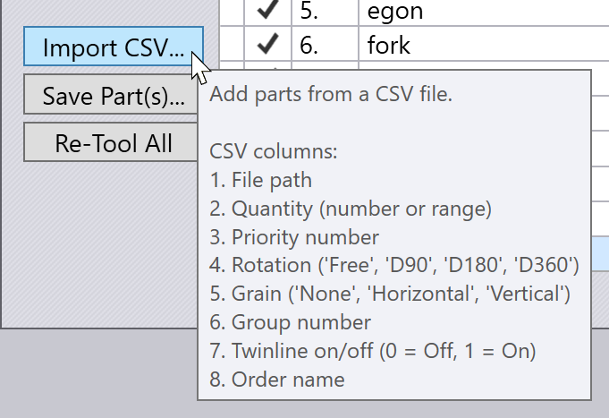

Tab Komponen
Tab Part digunakan untuk menambahkan komponen untuk nesting, dan untuk mengatur parameter seperti jumlah yang akan di-nesting, sudut putaran yang dapat diterima, dll.

Tombol Tindakan
Ini adalah tombol-tombol di sisi kiri panel komponen, yang digunakan untuk menambah atau menghapus komponen dari nesting, dan untuk melakukan beberapa aktivitas pada semua komponen:
-
Gunakan Add untuk menambahkan komponen untuk nesting. Ini bisa berupa file .fx yang sudah dilengkapi alat atau file 2D atau 3D apa pun yang dapat diimpor dan dikonversi oleh TecZone Laser menjadi komponen lembaran logam. File-file ini kemudian akan dilengkapi alat seperti yang dijelaskan di bagian Alur Kerja Komponen.
-
Tombol Add Assembly digunakan untuk menambahkan modul 3D lengkap. TecZone Laser akan memilih komponen lembaran logam dari modul dan menambahkannya ke dalam pekerjaan nesting. Jumlah untuk masing-masing komponen modul diatur untuk menghasilkan satu jumlah modul lengkap.
-
Tombol Add Layout digunakan untuk mengimpor file DXF yang berisi lembaran yang sepenuhnya di-nesting, dan menguraikannya kembali menjadi pekerjaan nesting.
-
Tombol Import CSV digunakan untuk memuat definisi pekerjaan nesting dari file CSV (comma separated values). File harus memiliki format tertentu dengan 8 kolom seperti yang dijelaskan dalam tooltip di bawah ini:
 -
Save Parts digunakan untuk menyimpan komponen yang dipilih sebagai file .FX. Saat Anda memulai pekerjaan nesting dengan file geometri (seperti DXF, GEO, data 3D), file-file ini akan diatur alatnya secara otomatis saat ditambahkan ke daftar Komponen. Tombol ini dapat digunakan untuk menyimpan versi komponen yang telah diatur alatnya sehingga dapat digunakan kembali dalam pekerjaan nesting lainnya.
-
Re-Tool All digunakan untuk menghitung ulang pengaturan alat untuk semua komponen dalam nesting. Ini berguna setelah Anda membuat beberapa perubahan pada pengaturan mesin, atau pengaturan untuk pekerjaan nesting tertentu ini, untuk memastikan bahwa semua komponen menggunakan pengaturan baru.
Kolom Tabel Komponen
Berikut adalah beberapa kolom dalam tabel komponen:
-
Bagian adalah jumlah yang diperlukan dari komponen tersebut. Anda dapat memasukkan angka sederhana di sini, atau rentang seperti
20 - 30. Ini berarti bahwa setidaknya 20 salinan komponen ini akan di-nesting, tetapi tidak lebih dari 30. TecZone Laser akan membebaskan nesting dalam jumlah berapa pun di antara kedua nilai ini untuk memaksimalkan efisiensi nesting, tetapi tidak akan pernah memulai lembar baru hanya untuk nesting komponen yang melebihi jumlah minimum. -
Komponen di-nesting dalam urutan Priority yang meningkat, jika nilai prioritas yang berbeda diatur untuk komponen yang berbeda. Namun,
Prioritas = 0diperlakukan sebagai kasus khusus - komponen ini memiliki prioritas terendah. -
Part Grain Pref digunakan untuk mengatur arah serat logam komponen jika hal ini penting. Jika diatur ke nilai selain None, hal itu akan membatasi sudut di mana komponen dapat diputar oleh mesin nesting. (Agar ini berfungsi dengan benar, Anda juga harus menentukan arah serat logam lembaran di tab Lembaran).
-
Nilai Group adalah petunjuk untuk mesin nesting - TecZone Laser akan mencoba untuk menyatukan komponen dengan nilai kelompok yang sama pada lembar yang sama, jika memungkinkan.
-
Jika sakelar Twinline dialihkan ke AKTIF untuk suatu komponen, mesin nesting akan mencoba menggunakan pemotongan garis bersama untuk komponen ini (komponen hanya memiliki garis bersama dengan salinan dirinya sendiri). Berikut adalah contoh di mana komponen yang hampir persegi panjang menggunakan pemotongan garis bersama pada arah vertikal dan horizontal: